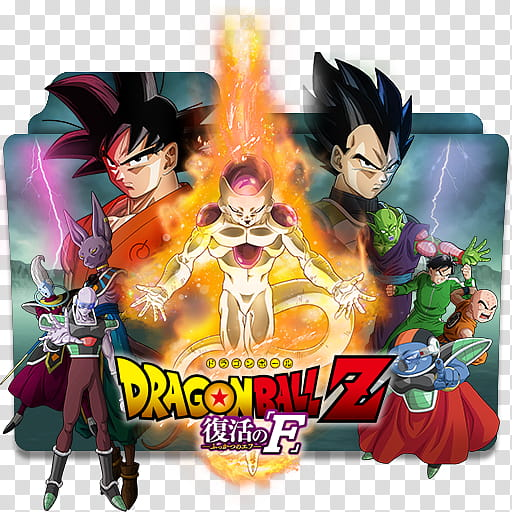
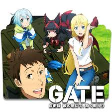
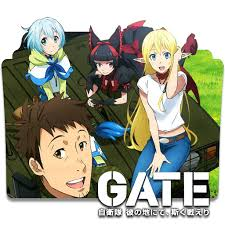

Genres
Fantasy
a type of story or literature that is set in a magical world, often involving traditional myths and magical creatures and sometimes ideas or events from the real world, especially from the medieval period of history: Characters in children's fantasy fiction often cross between worlds by magic.
-


 

Popular Fantasy Anime

Solo Leveling
Summaries. Follows the adventures Sung Jinwoo in a world that is constantly threatened by monsters and the evil forces. In his battles Sung transforms himself from weakest hunter of all mankind to one of the strongest hunters in existence.

jojo-bizzare-adventures
JoJo's Bizarre Adventure tells the story of the Joestar family, a family whose various members discover they are destined to take down supernatural foes using powers that they possess.

7 Deadly sins
The story of the Seven Deadly Sins, a group of warriors who were wrongly accused of a crime they didn't commit and went on a quest to vindicate themselves. The story of the Seven Deadly Sins, a group of warriors who were wrongly accused of a crime they didn't commit and went on a quest to vindicate themselves.